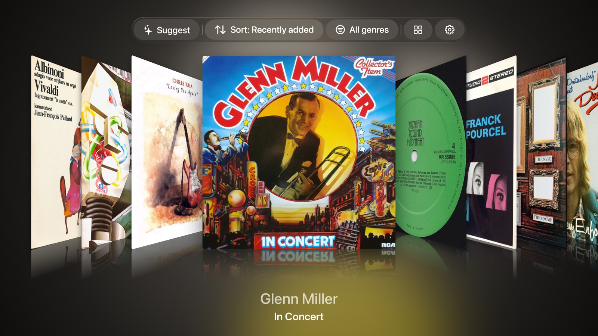
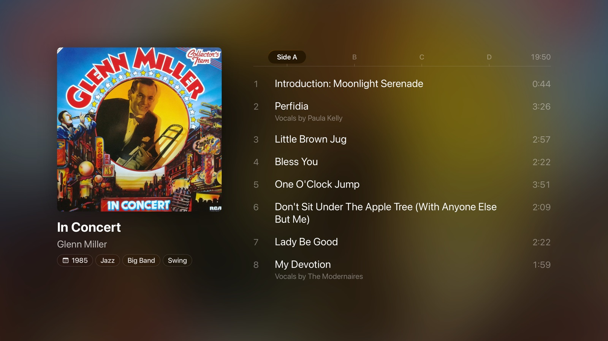
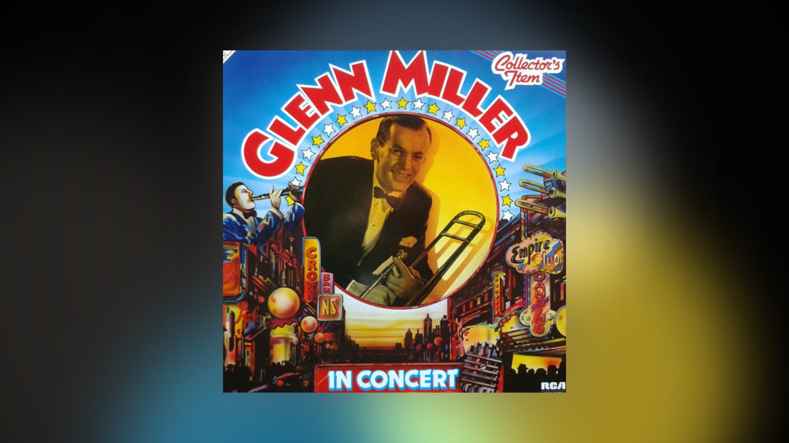

Your record collection, on the biggest screen in the house.
Sign in with Discogs and the whole shelf becomes ambient art. Flip through covers, drop the needle on a single record, or let the room breathe with a slow mosaic of everything you own.
Built for the way records are meant to be enjoyed.
Vinyl for Apple TV is a small, focused app: no playback, no streaming, no clutter. Just your records, beautifully rendered.
Cover gallery
Browse every record in your Discogs collection as a Coverflow-style wall. Focus a cover and the room behind it lights up with the artwork's own colours.
Record screen
Click in on any album to see the full tracklist, side by side. The cover anchors in place while sides A, B, C and D float beside it on a vintage radio-tuner slider.
Mosaic tapestry
A seven-column liquid-glass grid of every cover you own. Focus a tile and it lifts into a lens; let it sit and the room slowly drifts.
Ambient halo
A full-screen mode that puts one cover on a dark background, ringed by a halo in its own colours. The screensaver stays off while you sit with it.
A look at the app.
Big covers and nothing in the way.

Coverflow gallery
The default browse view — the focused cover throws its colours onto the back wall.

The record screen
Tracklist, credits, catalog tags, and a tuner slider for multi-disc releases.

Cover-art display
Sit with a record. The cover fills the screen, the room glows in its palette, and the screensaver stays off.
Ready when you are.
Bring a Discogs account with at least a few records on the shelf — the app will do the rest.